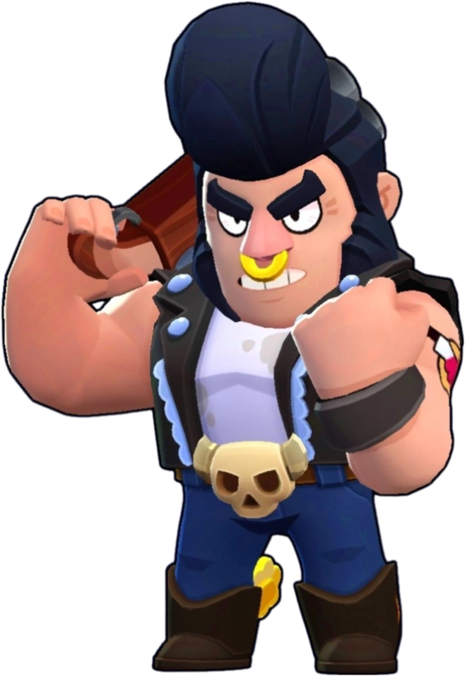

¿Quién es Bull?
Bull ya no es el toro salvaje de su juventud, pero lejos de estar oxidado, no dudará en demostrar que todavía es duro como el metal si alguien lo pone a prueba.
Bull es un brawler Especial que tiene mucha salud, una velocidad de movimiento rápida y una gran producción de daño a corta distancia. Su rasgo le permite cargar su súper de los enemigos que lo dañan. Su ataque es un disparo de múltiples proyectiles de escopeta que infligen un gran daño de cerca. Su súper lo hace cargar en una dirección determinada, dañando a los enemigos y destruyendo obstáculos en su camino, lo que le permite acercarse o escapar de los enemigos.
|  |
NIVEL DE FUERZA 11 |
Sus gadgets
VIGORIZADOR: Cuando se activa, cura instantáneamente 2000 puntos de salud, pero detiene el proceso de auto-regeneración. Este gadget no se puede usar cuando Bull tiene la salud al máximo o cuando está usando su súper. |
PISOTEADOR: Bull puede optar por interrumpir inmediatamente la carga de su súper con un pisotón que ralentiza a los enemigos atrapados en un radio de 3 casillas a su alrededor durante 1.5 segundos. Esto solo se puede usar durante su súper y cancela el súper al usarlo |
Sus habilidades estelares
 |
TORO FURIOSO: Cuando Bull tiene menos del 60% de salud, es capaz de recargar su arma el doble de rápido. |
 |
TIPO DURO: Cuando Bull tiene menos del 40% de salud, adquiere un escudo que reduce todo el daño recibido en un 30%. |
Su hipercarga
MANDÍBULA DE ACERO: La embestida reduce el daño recibido en un 80% |
 Braian Arancibia
Braian Arancibia Aya El Baarar
Aya El Baarar